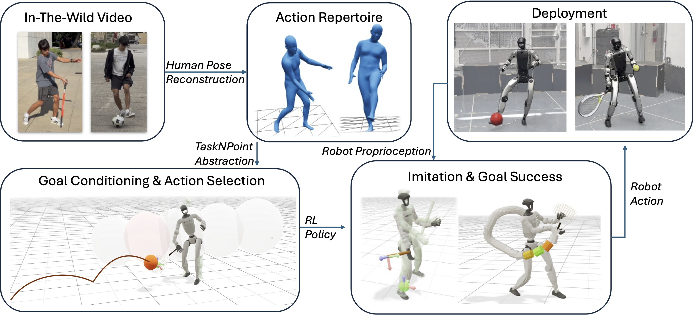

tl;dr A simple, tuning-free recipe for teaching humanoids to perform dynamic skills.
How do humans learn to hit a tennis backhand? Not from a thousand demonstrations or watching TV, we work with a coach and practice. We argue this is also the right recipe for teaching dynamic skills to humanoid robots. This follows from a structural property of such skills: success depends on learning to perform a handful of distinctive actions and, for each, perfecting a short crucial portion of the trajectory that decides the outcome (for a backhand, the approximately 20 cm of racket travel when ball contact happens), while morphology and physics determine the rest. We introduce TaskNPoint, which makes this division of labor explicit. The 'coach' contributes four irreducibly human inputs: the goal, a discrete taxonomy of skills, one demonstration per skill, and identification of the crucial sub-trajectory that determines the outcome. Physics and reinforcement learning in simulation fill in the trajectory and provide robustness to unmodeled events – crucially, randomized target sampling during training lets a single demonstration generalize zero-shot to goal locations never demonstrated. We test this approach on a Unitree G1 humanoid that hits forehands and backhands against balls thrown unpredictably by a human, kicks soccer balls passed similarly unpredictably, and pick-and-places boxes from novel locations. We find that learning is successful from a short human video demonstration and under an hour of training on a single GPU, with no per-task reward tuning and no new demonstration per target.
TaskNPoint is a real-to-sim-to-real pipeline with four stages. (1) Human Pose Reconstruction. We collect monocular (or multi-view) video of a human coach demonstrating each skill and recover 3D SMPL-X body pose estimates using PromptHMR. For in-the-wild multi-view footage we fuse per-camera estimates into a maximum-likelihood consensus pose to suppress depth-axis drift. (2) TaskNPoint Abstraction. We kinematically retarget the human motion to the robot morphology with GMR, then annotate the single contact frame (e.g., racket–ball impact) to extract the nominal 3D target point p*, target velocity ν*, and target orientation n*. This compact goal tuple — one point per skill — is the only task-specific information the policy receives. (3) RL Policy. We train a single goal-conditioned PPO policy in MJlab simulation. Target points are randomized around the nominal during training so a single demonstration generalizes zero-shot to novel goal locations. (4) Deployment. An OptiTrack motion-capture system estimates the incoming object trajectory in real time; a Kalman filter and hybrid dynamics model forward-propagate the trajectory, and the nearest motion class is selected via a Voronoi partition over the workspace.

The central abstraction of TaskNPoint is to represent a dynamic skill as a spatial and temporal goal G = {(p*, ν*, n*, t*)}: a 3D contact point, a target velocity scalar, a target orientation axis, and a time window around the moment of interaction. Rewards for position, velocity, and orientation are applied exclusively within this phase window, keeping the reward signal sharp and avoiding the reward-density collapse that occurs when the window is wide. A speed-agnostic phase variable τ(t) ∈ [0, 1] allows the same demonstration to be executed at different speeds by simply varying the frame rate — no new annotation is required.
By sampling target points from a Gaussian around the nominal contact point during training, each demonstration covers a 3D workspace volume (one standard deviation in each axis). Multiple demonstrations tile the full reachable workspace, as shown in the space-coverage figure below. This lets a small library of motions support a wide range of real-world goal locations without any additional data collection.
TaskNPoint proposes to abstract dynamic tasks as a 3D conditioning point and motion phase window, making the policy robust to novel incoming trajectories in deployment. Below we show successful execution of tennis motions, soccer kicks, and box pickup and placement on the Unitree G1 humanoid.
We compare TaskNPoint against state-of-the-art methods on two tasks: ballistic hitting (tennis forehand/backhand) and cargo pickup (box pick-and-place). We report success rate (SR), generalized success rate (GSR) on novel trajectories, and target position error eb. TaskNPoint achieves the highest GSR across both tasks and the lowest target position error, demonstrating superior generalization.
| Method | Ballistic Hitting | Cargo Pickup | ||||
|---|---|---|---|---|---|---|
| SR↑ | GSR↑ | eb (m)↓ | SR↑ | GSR↑ | eb (cm)↓ | |
| SkillMimic | 68.2% | 30.9% | 0.48 | 0.4% | 0.0% | 28.3 |
| OmniRetarget | 75.8% | 20.4% | 0.15 | 0.0% | 0.0% | 13.3 |
| HDMI | 90.0% | 25.3% | 0.07 | 95.8% | 1.8% | 13.1 |
| XMimic | 100% | 90.6% | 0.09 | 99.3% | 96.3% | 8.67 |
| TaskNPoint (Ours) | 99.5% | 93.0% | 0.02 | 100.0% | 98.0% | 4.85 |
We deploy our controller on a 27-DoF Unitree G1 humanoid, running the policy onboard at 50 Hz and receiving OptiTrack ball position estimates via Ethernet. The robot successfully returns balls thrown at 5–10 m/s and placed up to 2 m laterally. Performance degrades gracefully with ball speed, and the robot never falls even on missed hits — a robustness property we attribute to the abstraction. Box pickup failures were exclusively due to imperfect grasps, not policy failure.
| Tennis SR | Soccer SR | Box SR | |
|---|---|---|---|
| Slow (0–4 m/s) | 1.00 | 1.00 | 0.60 |
| Fast (4–8 m/s) | 0.45 | 0.70 | n/a |
Success rates over 20 trials per condition.
@inproceedings{tasknpoint2026,
author = {Werner, Blake and Demler, Ilona and Perona, Pietro and Ames, Aaron D.},
title = {TaskNPoint: How to Teach Your Humanoid to Hit a Backhand in Minutes},
booktitle = {10th Conference on Robot Learning (CoRL 2026)},
year = {2026},
}